开发指引
1. 前期准备
准备一台 RhinoX Pro 头显（RhinoX一代头显不支持手势）
按照 入门指南 导入SDK并完成相关配置
2. 添加手势跟踪配置
勾选XR Settings中的Hand Tracking选项
Note
XR Settings 路径：Assets/XR/Settings/XR Settings.asset。
在InputActionManager的Action Assets中添加Hand Tracking Input Assets
Note
XR Origin必须为ActionBase，如果不是，请重新创建.
3. 添加手势关节预制体
此步骤为 非必须项 ，如果您希望在使用过程中观察手势骨架，您可以添加此预制体。当然，您也可以自行创建脚本，在使用 过程中手动控制是否显示手势骨架。
创建方式：Hierarchy面板鼠标右键 Ximmerse XR -> Virtual Hand Model。

路径: Packages/com.ximmerse.xr/Resources/Gesture/Virtual Hand Model.prefab
使用此预制体，开发者可以在内容中渲染被跟踪手部的虚拟手对象。
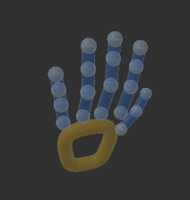至此，您的工程已经具备了手势数据获取的功能
如果您希望自定义手势交互方式，您可以自行通过API获取数据来实现；
如果您希望使用标准的注视点手势交互方式，您可以继续接下来的步骤。
4. 添加注视点手势交互组件
1. 添加GazeAndHandInteractionSystem组件
此组件为注视点手势交互的系统组件， 场景中必须存在此组件才能实现注视点手势交互。
创建方式：Hierarchy面板点击鼠标右键，点击Ximmerse XR -> Gaze And Hand InteractionSystem
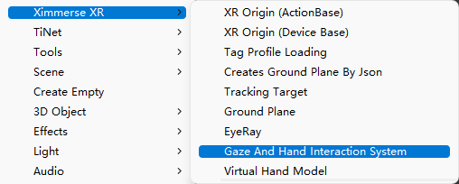Cursor State Image：选择Custom可修改光标在默认、跟踪手部以及选中交互物体三种状态下的图案显示，如果选中Default则为SDK默认图案。
Eye Ray GO：选择custom可自定义头瞄射线交互组件，如果选中Default则为SDK默认配置。
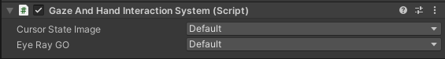 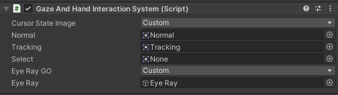2. 添加Eye Ray组件
Eye Ray为注视点射线组件，创建方式：Hierarchy面板点击鼠标右键，点击Ximmerse XR->Eye Ray。
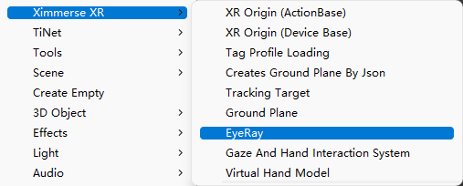创建完成后此组件会显示在XR Origin（ActionBase）/CameraOffset下面，与手柄组件类似
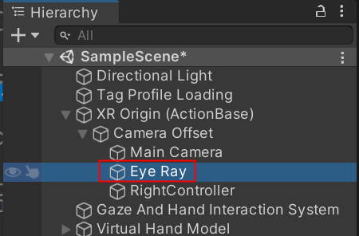此对象上的Eye Reticle组件代表注视点射线。 它实际上是继承于 Unity 的 XRRayInteractor 的一个射线的实现类。其位置和双目中心点位置重合，方向等同于双目直视前方的方向。
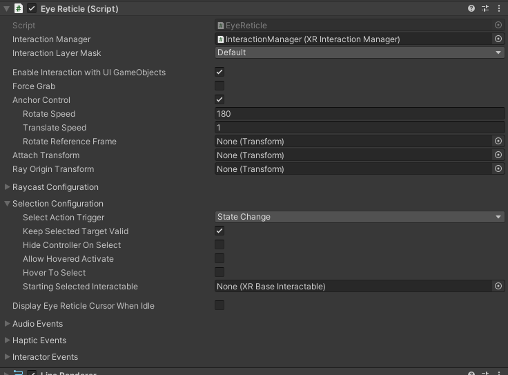Eye Ray上还有一个 XRController 组件，此组件响应手势输入，并与 Eye Reticle 射线搭配完成交互功能。
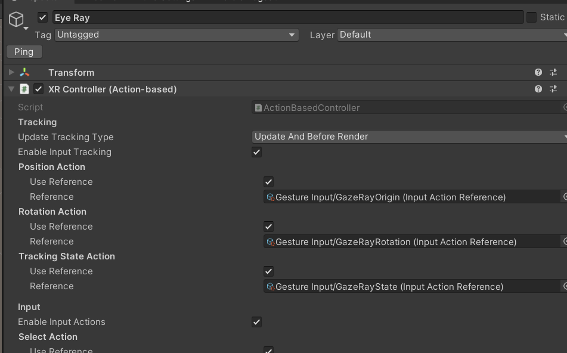Note
该组件会在XR Origin/CameraOffset下生成，使用过程中如果不需要修改其配置可默认不生成。
5. 创建交互对象
您只需要按照标准的Unity XR交互方式创建交互对象即可实现常规的交互功能，如：在模型上添加 XRGrabInteractable脚本 实现抓取；添加Button实现按键点击等等。
6. 补充说明
我们基于Unity Input System提供了一套手势交互的映射配置，名称为：Hand Tracking Input Assets
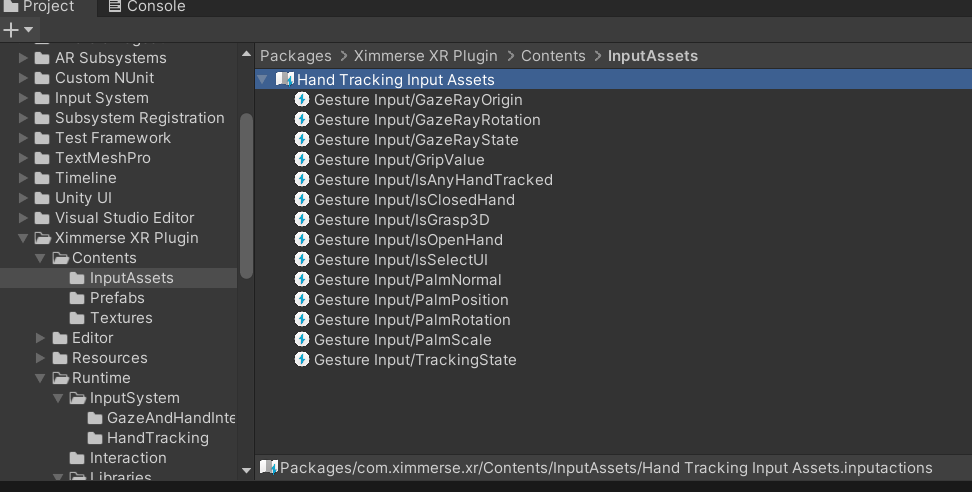这里我们将手势动作与交互行为进行绑定，点击Edit asset可以查看配置列表
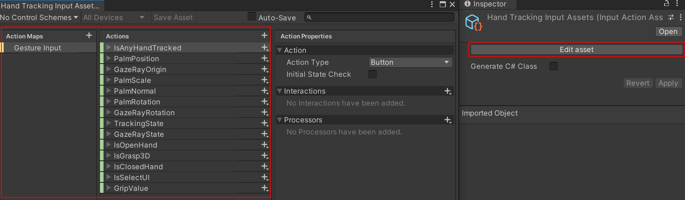一般来说，开发者不需要做任何编码，使用默认设置就可以直接使用注视点手势交互系统。只需要在场景中添加常见的交互组件 如 XRGrabInteractable ， Button， Slider 这些支持交互的组件， Unity 的交互体系会自动将注视点手势交互系统和交互组件对接起来。
如果您有丰富的手势开发经验，那么您可以尝试自定义手势，修改映射关系，实现您需要的功能。
具体您可以参考如下脚本代码
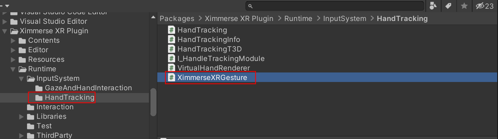